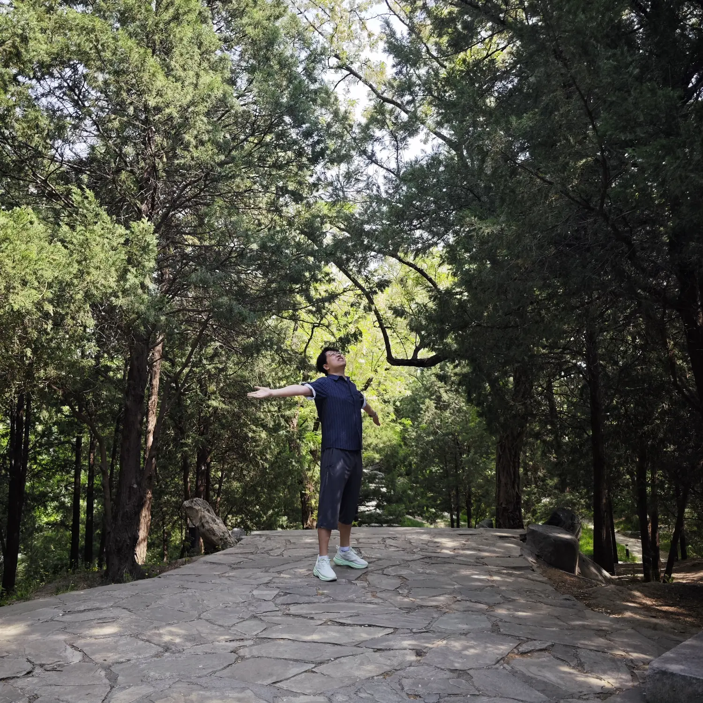

「星轨站」
STAR TRACK STATION蜡烛先生与芒果女士 · 1号线星轨
2026.4.14 - 一列开往星辰的列车
从五棵松上车，沿着1号线，开往520。
上车STAR RAIL MAP
星轨路线图
轨道距离：仅 2 站 · 缘分密度：无限
4月14日 · 五棵松前夜
第一次正式邀约
MEET TICKET
17:40 · 五棵松地铁站 B 口
一顿晚饭，把两颗星接进同一条轨道。
NICKNAME STARS
外号星
这些名字不是标签，是我们一点点靠近后长出来的小星星。
芒果女士

蜡烛先生
OBSERVATION LOG
我们的数字
TERMINAL 520
终点站 · 520
写给芒果女士
从五棵松第一次见面开始，很多普通的日子都变成了只有我们才知道的故事。
我喜欢和你一起吃饭、走路、打电话、玩很幼稚也很快乐的游戏，也喜欢我们认真解决问题时的样子。
“我们的目标要解决世界，而不是解决对方。”
列车将继续前行，下一站，每一天。